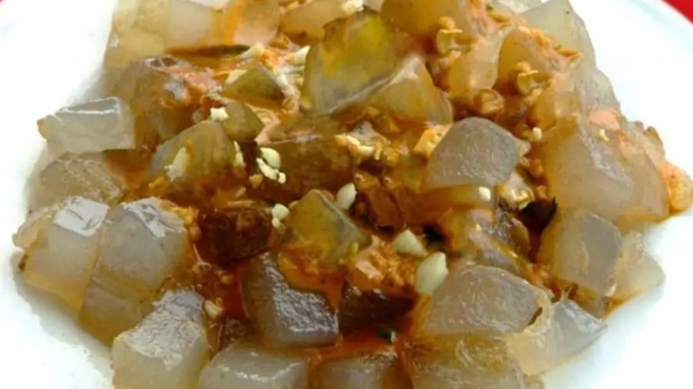
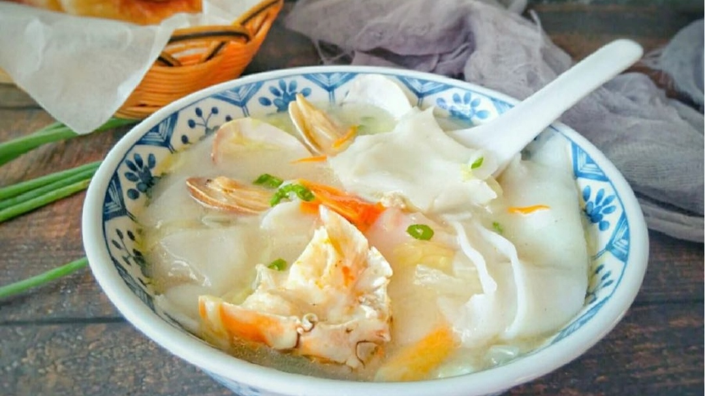
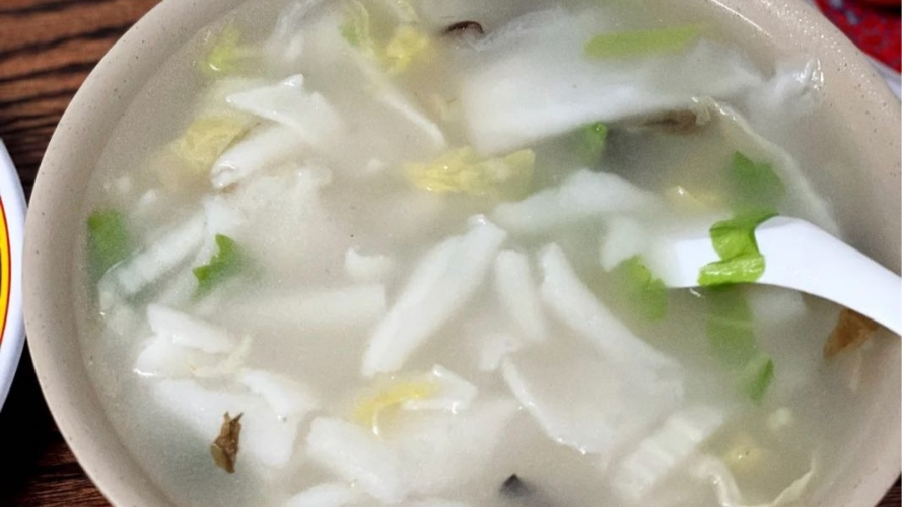
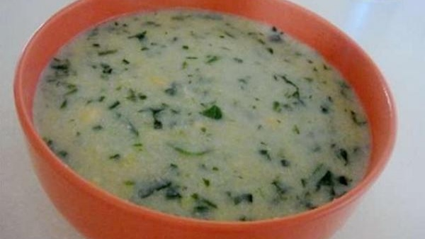
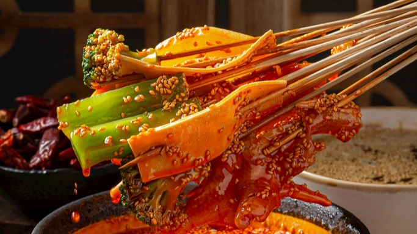

调查家乡特色饮食
家乡，是我们出生和居住的地方；家乡是我们难以抹去的成长印迹；家乡是我们心灵栖息的归宿。家乡，承载着许许多多鲜活难忘的各类人物，千姿百态的生活方式，丰富深厚的文化记忆……
调查内容
调查问卷：https://www.wjx.cn/vm/rX7b3Wb.aspx
调查结果
1.详细结果
https://wwr.lanzoui.com/i1ILMuvi2kb
密码:i0oz
2.筛选结果
2.1调查美食区up主和博主等
(1)烟台焖子

调查对象：江南大学食品研究生
性别：男
记录：烟台特色美食自然属烟台焖子排第一了，在烟台的街头巷尾，你会见到这样的地摊：一个小小的炉灶，一口平底煎锅，几张小饭桌，几只小马扎，便是这个地摊的全部家当;盆里或桶里盛着地瓜淀粉或绿豆淀粉制作的粉块，小桌上摆着几样自制的调料，就是这种小吃的全部原料。这便是烟台著名的小吃烟台焖子。
烟台焖子是山东省烟台市的一道传统小吃，属于鲁菜系，该菜品用粗制地瓜淀粉做原料，将淀粉加水加热打冻，将冻切成小块，用锅煎到外边成焦状颜色由白变透明，并佐以味达美，虾油、芝麻酱、蒜汁等调料上桌即可。
(2)福建锅边


调查对象：b站美食区up主
性别：女
记录：锅边真的是独一无二的味道，哪里都吃不到。
锅边是早餐店都有的，锅边加上油饼和油条，就是一顿早餐。
有很大的锅，先热锅，然后把面糊淋在锅的两边，而不是倒锅里，淋在锅的周围淋一圈，熟了以后刮下来，刮到锅里，再加水和一点点海鲜煮成汤，味道特别鲜美。
图片中碗里的是米皮，不是面，这是南方靠海特有。
海鲜不是特色。
2.2调查网友
(1)菜豆腐

调查对象：网友
性别：男
记录：陕西的一道传统名吃，被评为汉中四大小吃之一
平民小吃
(2)螺狮粉
- 调查对象：网友
- 民族：壮族
- 记录：好吃，酸辣
(3)糍粑
(4)早茶
(5)白切鸡、烧鹅
(6)蒿子粑粑
